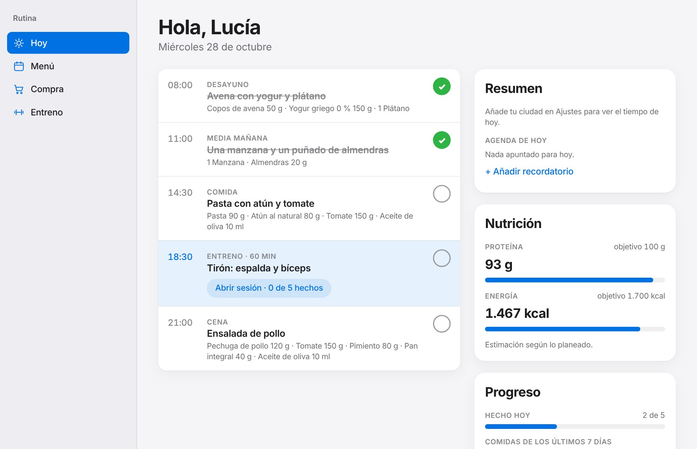
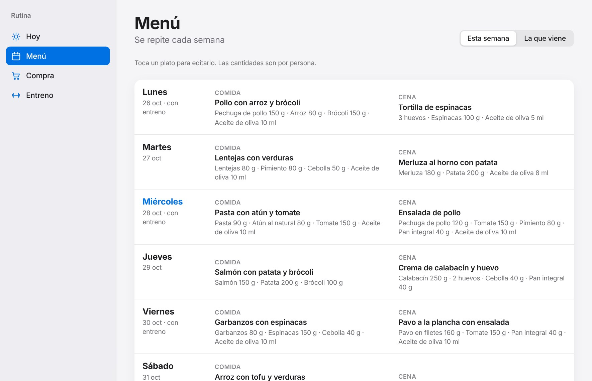
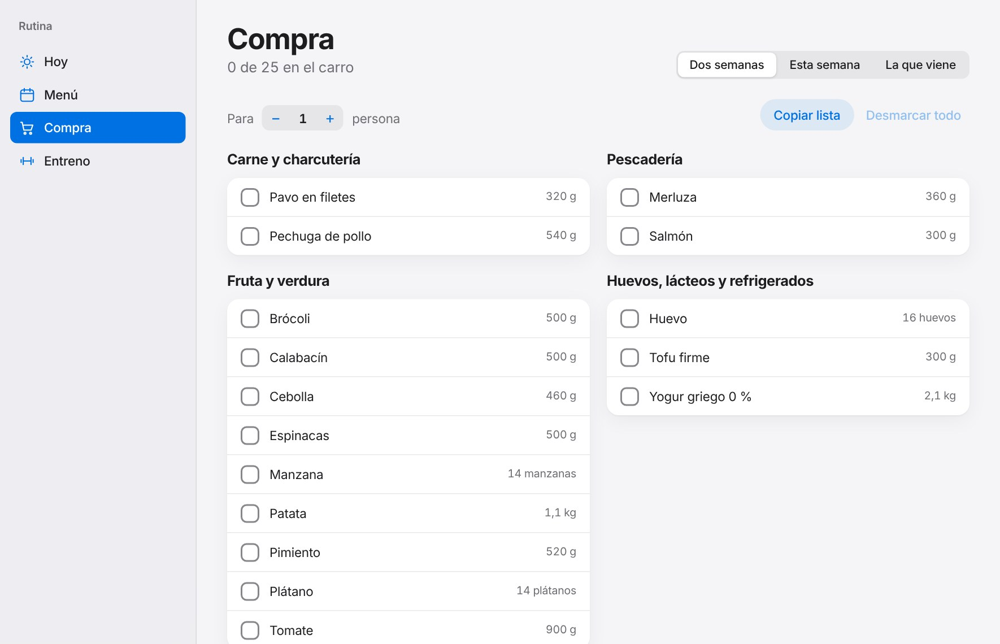
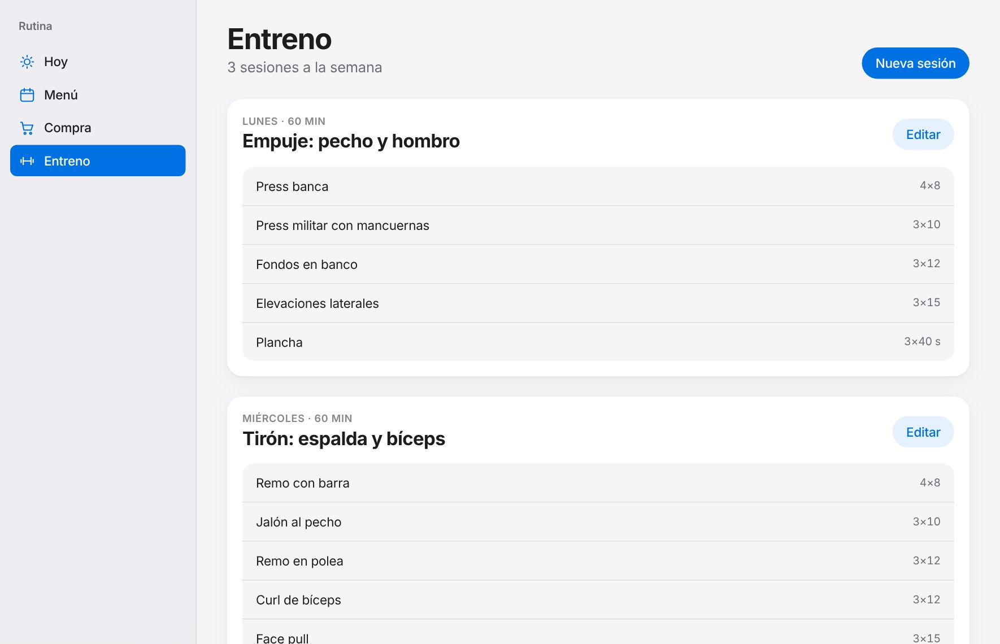

Hoy
Todo el día, de un vistazo.
Desayuno, comida, entreno y cena en una línea con su hora. Marca lo que ya has hecho y mira cómo vas de proteína y calorías.
Comidas, compra y entrenos en una sola app para tu ordenador. Sin cuenta obligatoria. Tus datos se quedan contigo.
Para macOS y Windows

Hoy
Desayuno, comida, entreno y cena en una línea con su hora. Marca lo que ya has hecho y mira cómo vas de proteína y calorías.

Menú y compra
Diseña tu menú buscando entre miles de alimentos y productos de supermercado, con las calorías y los macros a la vista mientras eliges. Rutina suma los ingredientes, los ordena por secciones del súper y te deja copiar la lista.

Entreno
Crea tus rutinas, apunta el peso de cada ejercicio y recuerda cuánto levantaste la última vez. También el dolor, de 0 a 10, para frenar a tiempo.

Privacidad
Todo se guarda en un archivo de tu ordenador. Si quieres usar Rutina en más de un ordenador, puedes crear una cuenta opcional: entonces tu plan se guarda también en la nube y solo tu cuenta puede verlo.
Abres la app y empiezas. Solo creas una cuenta si quieres sincronizar tus ordenadores.
Solo consulta el tiempo si le dices tu ciudad, y puedes no hacerlo.
Sin cuenta, tus datos no salen de tu ordenador. Con cuenta, se sincronizan. Puedes borrarlo todo cuando quieras.
Elige tu ordenador.
En un archivo dentro de la carpeta de datos de tu usuario, en tu propio ordenador. Solo se envían a la nube si tú creas una cuenta para sincronizar.
No. Solo se conecta, si lo activas poniendo tu ciudad, para consultar el tiempo del día.
Sí. Lo más fácil es crear una cuenta en Ajustes y entrar con ella en el otro ordenador: tu plan se sincroniza solo. Sin cuenta, Guardar una copia crea un archivo que cargas con Recuperar una copia.
Al empezar puedes cargar un plan de ejemplo y editarlo, o empezar en blanco. Tocas un plato para cambiarlo y añades tus ingredientes con sus calorías y proteína.
Por ahora no. Rutina es para Mac y Windows.